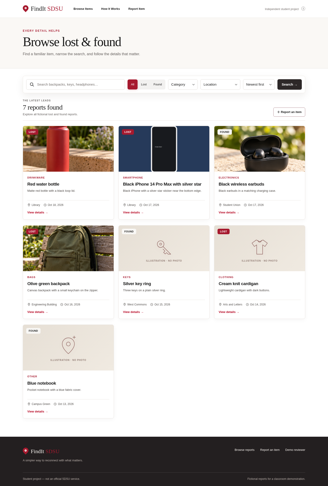
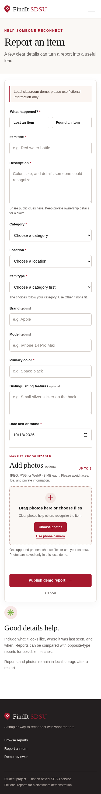
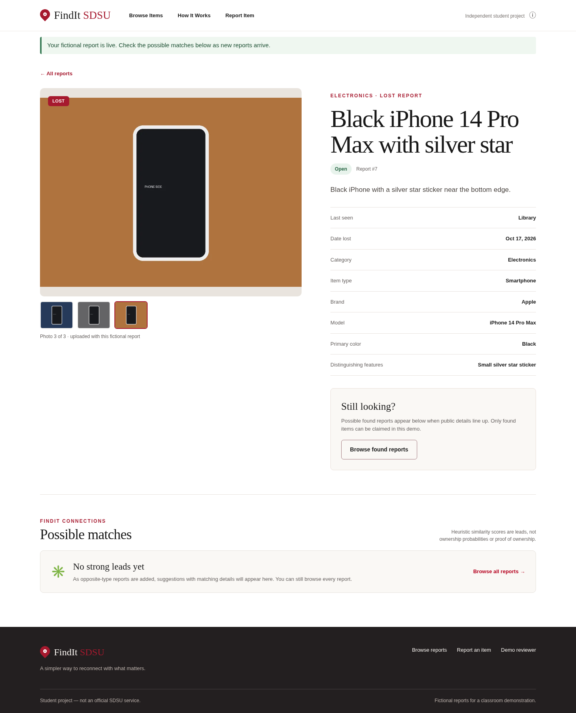
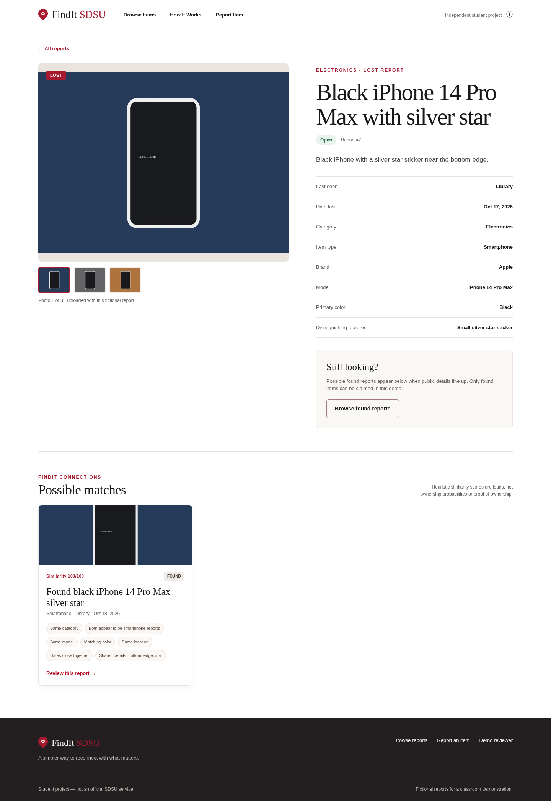

Our product · Local proof of concept
From a report to a possible reunion.
The working Flask application connects search, structured reports, photo galleries, explainable possible matches, and a carefully constrained claim workflow.
What works now
A real workflow, from start to finish.
Each screen below comes from the running application on the completed work/app branch.
Browse
Search lost and found reports by text, report type, category, and location.
Report
Add structured details and optionally upload one to three JPEG, PNG, or WebP photos.
Compare
Review possible matches with visible reasons based on compatible public details.
Claim
Submit a private identifying detail for a found item; the local reviewer can approve or reject it.
A closer look
Actual screens. Fictional reports.
The demo imagery and item records are invented for classroom testing.




Under the hood
Simple tools, deliberate data rules.
The app is a local classroom demonstration. The database persists across restarts; uploaded photo files are kept beside it in local storage. No real campus claims or private data belong in this demo.
- Interface
- Server-rendered Flask pages, responsive HTML/CSS, and a little JavaScript.
- Storage
- SQLite with six related tables: users, categories, locations, items, item_photos, and claims.
- Images
- Pillow checks JPEG/PNG/WebP uploads and saves processed WebP files locally. The first photo appears on cards; the full set appears in the item gallery.
- Matching
- Indexed candidate search and deterministic scoring compare opposite lost/found reports. Incompatible types and conflicting clues are filtered; a score is a lead, not a probability or ownership proof.
- Claims
- Private explanations stay off public item pages. SQLite constraints and transactions permit at most one approved claim per found item.
How to try it
Run the demo locally.
The current application is not hosted as a public claims service. Use fictional names, emails, and item details when trying it.
See the setup commands- Start with the application branch.Follow the README on
work/appto install dependencies and initialize the SQLite demo database. - Browse or report an item.Search the starter reports, then make a fictional lost or found report with useful public clues.
- Review a possible match.Open an item detail page to compare suggested opposite-type reports and their reasons.
- Claim and review locally.Claim a found item with invented identifying information; use the local demo reviewer to approve or reject it.
Scope note
Built to demonstrate the workflow, not yet to run it for a campus.
The demo reviewer has no production authentication and only accepts loopback requests. The application has no login, email integration, or public hosting. Matching can miss real items or suggest false leads. It should not be used for real claims until those limits are addressed.